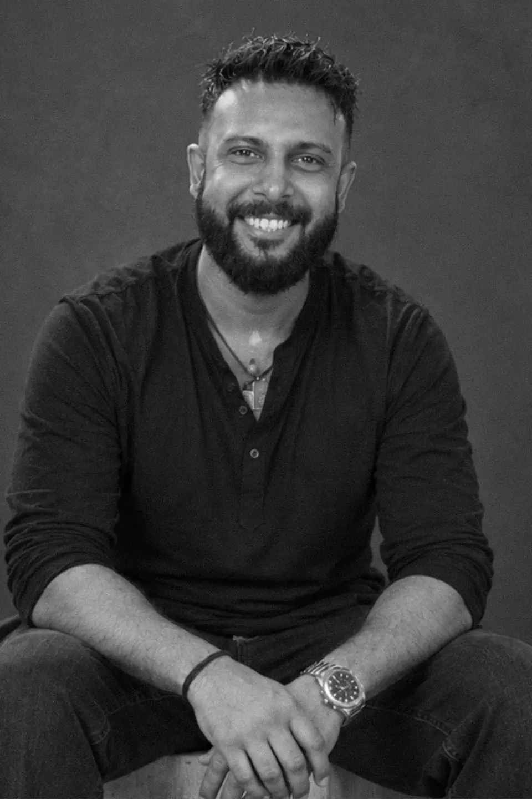
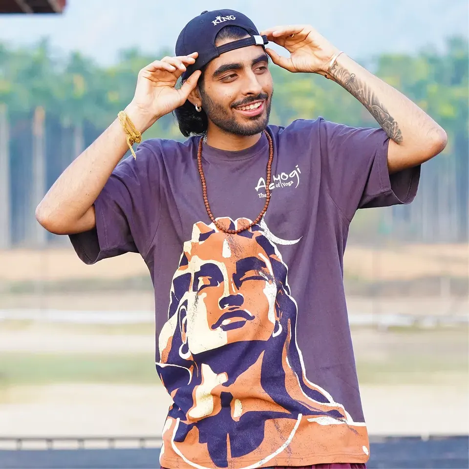
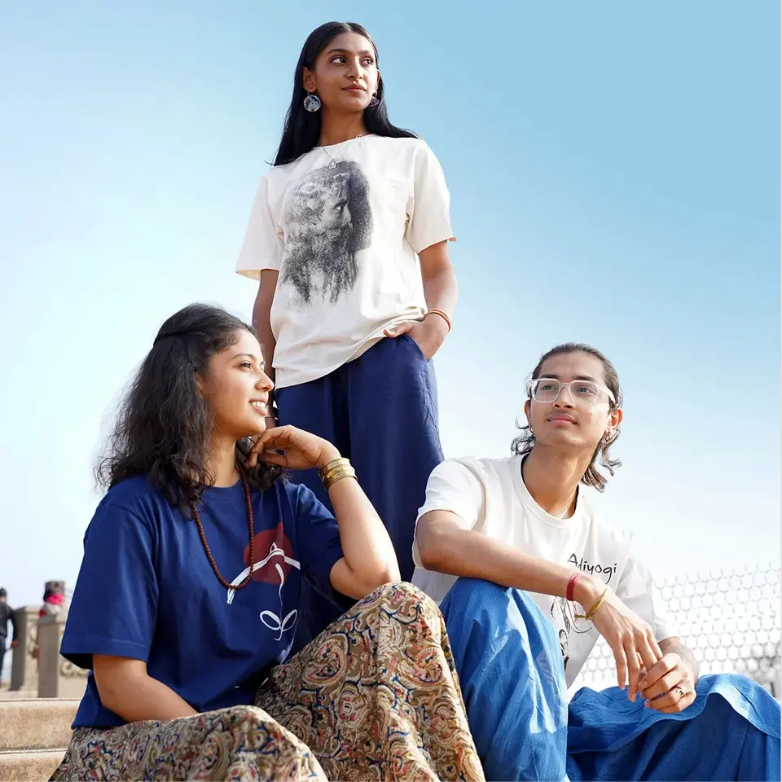

Bring the grace of Adiyogi into every home, on every screen, in every language, for one night the world stays awake.
Palette
Type
AaFedra Sans · headlines and body
Formats Rolling out
IL02BannerIL02AdsIL02EmailerPUB · LEDIL02Others

I’m Ritish Soechit. For fourteen years I’ve worked where ideas meet the real world, as a creative strategist, art director and designer. I connect the thinking, the image and the system behind it.
Creative strategy
Design thinking
Visual storytelling
Creative operations
Selected work
Six briefs. One way of working.
Every project moves the same way: from an idea, to an image, to the system that lets a team carry it everywhere. Scroll through each one, or open the full case study.
01 ·Campaign system· Isha Life
One night, every screen.
One of the largest night-long celebrations in the world, carried by a single key visual from a phone banner to an LED wall.
Good creative work starts with the image. Concept, casting, styling, light and selection, directed for each product family.

With StyleA T-shirt collection for young India, with spirituality shown as modern and aspirational.With StyleA T-shirt collection for young India, with spirituality shown as modern and aspirational.

With StyleA T-shirt collection for young India, with spirituality shown as modern and aspirational.
Editorial direction
A style guide, so it holds at volume.
For Isha Life's e-commerce listings, a photoshoot style guide and moodboard defined background, light, retouching and composition, so hundreds of product images look like one brand.
● Impact
From idea to scale, stated plainly.
Fourteen years across brand, campaigns, digital and creative operations. The numbers below come from structured planning, clear ownership and better workflows, not longer hours.
30→250+monthly design deliverables at Isha Life
~50%more production capacity from a performance framework at Isha Foundation
1,000+canvases a month across the central design team
14+years in brand, campaign, digital and operations
01Creative strategy
Finding the real problem, then setting a direction a team can follow.
02Art and photo direction
A clear visual point of view, held from concept to the last format.
03Brand and visual systems
Identities and kits that stay coherent while allowing variety.
04Creative operations and AI
Workflows, taxonomy, tracking and agentic AI that let quality scale.
The wider archive
Campaigns, emailers, everyday craft.
Festivals, launches, events and the steady flow of work behind them.
I started in 2012 in a Rotterdam sign shop, designing signage, large-format print and full vehicle wraps, then installing them. It taught me that a design is only finished when it works in the real world.
I went on to run my own practice, Adoiniz, for five years, and then led design, art direction and creative operations at Isha Life. Today I'm part of the core Design leadership at Isha Foundation, shaping creative direction, operations, people development and AI adoption across a global design ecosystem.
For five years I lived as a monk at the Isha Yoga Center while still working in design. It changed how I work: I look for the reason behind a decision before the decision itself.
One thing I have realised over the years is this: design is not decoration. It is problem-solving. It is creating clarity where there is noise. It is turning abstract ideas into something people can see, feel and believe in. That is why my work naturally stretches into strategy, operations and brand building, because design is only as strong as the system it lives in.
And while creative work keeps me excited, mentoring keeps me grounded. Working with young designers, helping them find confidence, navigate challenges and discover their own way of seeing the world, reminds me why I started this journey in the first place.
2025 – now
Isha FoundationCreative Strategist & Operations Lead · Lead Art Director
2022 – 2025
Isha Life IndiaDesign Lead · Art Director · Project Manager
2017 – 2022
AdoinizFounder · Creative Director · Graphic Designer
2012 – 2013
Quickpaint, RotterdamDesign Assistant, then Senior Designer